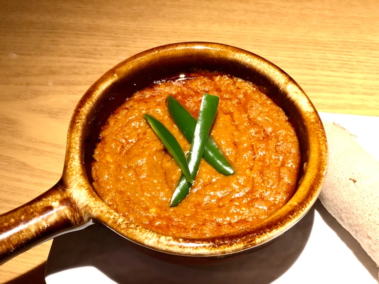

Shiro

Miti'n SHIRO
Miti'n SHIRO is a simple, silky ground chickpea Ethiopian stew that takes little time and effort to make. It is a classic blend of Roasted chickpeas, shallots, roasted garlic, ginger, berbere and various spices.
Ingredients
- 1 cup Shiro Mix
- ½ cup Sunflower oil
- 4-5 cloves of minced garlic
- 1 medium yellow onion
- 1 medium tomato diced
- 4 cup of water
- Salt as needed
Steps
- In a medium size pot, cook the onions on medium-high heat for several minutes, stirring frequently, until they start to get brown.
- Add the oil and cook for a few more minutes.
- Continue to sauté for another 2-3 minutes then add tomatoes
- Cook for 4-5 minutes. Add 3 cup of water and continue to simmer
- Start adding Shiro mix gradually, stirring with a wire whisk until all lumps disappear. Shiro will start to get thick and pop.
- Let it cook for 15 - 20 minutes
- Continuously add a small amount of water, while stirring for 1-2 minutes or until desired Shiro thickness.
- With more cooking time, Shiro stew will continue to become thicker. It's always best to add a small amount of extra water and let it cook for an additional 4-5 minutes.
- Add the garlic and salt (as needed), stir well, and continue simmering until oil starts appearing for 2-3 minutes.
Recipe and image Credit: tsionafoods.com | miti-n-shiro
Return to main page